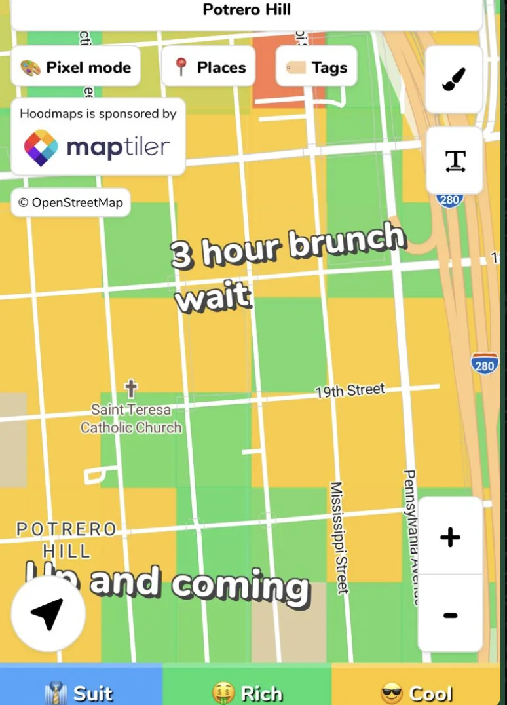

New website
Thanks to some feedback from “The Big Youtube short” I decided to make this newsletter an actual website rather than Google Docs. This lets me customize things some more including giving hover over descriptions of character names which makes it easier to learn who other people are!
Let me know if you have any feedback about this new website! I’ll get my coding agents to improve on it immediately!
Monday
I went to Barry’s in the morning before work and had my best workout yet. I got something somewhat akin to a runners high when lifting weights. It felt amazing. Afterwards I found myself repeating the motion over and over again. I was actually excited to try the motion again and see if I could keep going.
After work I hung out with folks at Mission Run Club. Unfortunately my legs were not up for the run itself after Barry’s in the morning but it was still fun to hang out. Someone there told me about this website called hoodmaps where you can see different nicknames people have come up with for different neighborhoods. My personal favorite was calling the area where Plow is “3 hour brunch wait”.

Tuesday
Clack clack on the keyboard.
Wednesday
Today after work I did Midnight Runners with “Sergeant Sassy” and “The Trivial Pursuit” and another guy who I’ve met before but isn’t prevalent enough here to give a nickname to. The run itself was good. Afterwards we went to The Port of Peri Peri where shockingly enough I actually ate. It was a pretty reasonable burger.
While we were eating the 4th guy in our group (who I will temporarily call “The Spanish learner”) was trying to learn Spanish from “Sergeant Sassy”. It brought back memories of my high school Spanish class as I relearned the difference between ser and estar. Surprisingly despite my 1 on the AP Spanish exam even I wasn’t totally useless here and could occasionally offer up some correct answers.
I now kinda want to have a Spanish off where I have my friends who speak Spanish like “Sergeant Sassy,” “The Hombre,” “La Tacqueria Royalty,” and “The Fisherman” square off against each other for some unknown prize possibly involving burritos. Actually I don’t even really know what a Spanish off would be but I still kinda want it to happen.
Thursday
Today after work I went to bar night with “The Philosopher,” “The Mosher,” “That’s nuts,” “The Finer Things," “The Best,” and “The Twitch Streamer”. I learned that one of the regulars at bar night maintains a music sequencing website that “That’s nuts’s” boyfriend actually uses. Also I learned that “The Twitch Streamer” actually got his start as an influencer on motorcycle TikTok which is pretty cool!
“The Philosopher” brought a bunch of Dominoes to bar night which I wish I left a Yelp review for but didn’t :(.
I also learned there are different kinds of epi pens some of which are much easier to use than others. Ones in Canada are easier to use you take it out, twist, and inject. The last thing you want with an epi pen is trying to figure out how to use it when you need it. I’ll admit I’ve never been particularly opinionated on epi pens until now :D.
Friday
I went to Barry’s in the morning. It wasn’t as good as Monday but it still hit.
Today after work I went with “The Fisherman” and “Top of the Rope” to help get signatures on a petition to save public transit in the Bay Area. I don’t normally post politics here but it shouldn’t be surprising to y’all that I am an unabashed public transit stan and very much don’t want public transit to fall by the wayside. We learned some of the basics of how to get signatures on petitions. Some of the stuff is obvious like anyone who signs must be a registered voter, and some things that were less obvious like the fact that there are different sheets for people registered to vote in different counties (SF, San Mateo, Contra Costa, Alameda, Santa Clara) and you can’t have two people from different counties sign on the same sheet or it will invalidate the whole petition :O.
We got some sheets so expect me to come ask to you sign (if you meet the criteria expect that I will be badgering you in the near future >:)).
While there we had a brief flyby with a Saturday trasher who I don’t have a nickname for. Hmm, lets call him Mr. Roblox Runner or Mr. Double R because I’m sick while writing this and my creativity isn’t at it’s highest right now.
After that we all went to a startup party to celebrate the acquisition of a startup two of my old Snorkel coworkers work at. It got acquired by Google and I’m super excited for them! They’re both super awesome people and this is incredibly well deserved.
The party itself doubled as a way for me to catch up with a bunch of my old coworkers.
Afterwards I had a 1:1 with “The Boxer”. At this point I think I’m almost done with my 1:1s, if I haven’t verbally reached out to schedule something (even if the invite hasn’t come yet) please let me know! Anyways, we went to 4505 Burgers and BBQ and talked a lot about work, hobbies, and other stuff. He asked me what some of my main goals for the year were. You know its funny we’re only 2 months in and I feel like they’ve shifted a lot. The first impression stuff wasn’t something I was thinking about at the beginning of the year neither was the gym bro stuff and yet here we are.
As a bit of a tangent it’s funny because both of these were things I started as a way to help me with dating but they’ve both evolved beyond that in ways that I’ve found pretty meaningful. Some of the first impression stuff like being more empathetic has really helped when I’ve wanted to encourage people I’ve been talking with and make them feel better which is a genuine goal of mine but one I haven’t always been the best at expressing in words. One of the books “The Philosopher” gave me to read (“The Like Switch”) really helped me with that in ways that I find meaningful not because it will help me with dating but just because it will help me to become the more ideal version of myself.
Similarly going to the gym is now even kinda fun. Way back last year when I went with “The Professor” and “The Quant” I was complaining a lot (some might say too much but I found it funny), and now I somewhat enjoy going to Barrys and I really enjoy how I feel afterwards.
Don’t get me wrong I still have dating as a goal but it’s been interesting to see my interest in these steps evolve to being more than just a means to an end.
It was really cool hearing about how much he was enjoying his work and his new place as well. He also expressed interest in going for the 7 can record which I want to setup for beginning of April so be on the lookout for that.
Afterwards I went back to the party where I hung out for a surprising number of hours. While there I learned that the twin sister of someone I knew from college is engaged to the twin brother of an old coworker of mine. Also I met a woman who works at City Hall and was responsible for hiring “The Politician” to his current role which was cool.
At one point the fire alarm went off due to the smoke machine there so I wound up going to a nearby Salt and Straw and chatting with some folks I met there for about an hour. I convinced some people to come to Marina Run Club (SFs 3rd best run club), got a verbal commit from someone to close one volume of Mooni hoodie sales, and found out about a musical open mic where you can go up and sing songs on Mondays which I am very much looking forward to. I was told if you go early there is less pressure because there are less people but frankly going with more people sounds a lot more fun to me. I didn’t say it would be good for their eardrums mind you but that's a secondary concern here.
Saturday
The day begins with Marina Run Club with “Top of the Rope”. I was hoping to find Katie the girl I was interested in but sadly she doesn't show up today.
On the other hand I did find a guy whose dad owns Bongo Burger! Bongo Burger was a small chain of burger restaurants that I went to all the time back at Berkeley. I can now add him to my esteemed list of people I know whose family owns a restaurant that I know of along with “La Tacqueria Royalty”. In the words of philosopher emeritus Dr. Doofenshmirtz “If I had a nickel for everyone I met whose family owns a restaurant I’ve been to I’d have two nickels. It’s not a lot but it’s weird that it happened twice right?”
I managed to get some of the people from the startup party to come to run club which was also pretty fun!
I also meet a guy who says he writes Yelp Reviews and his goal is to become Yelp Elite. I offer to nominate him since that is something I can do but he then says that he writes his reviews on a secret account and turns me down. In a bit of high risk fun I tell him about how I become Yelp Elite and he responds by saying that’s really smart but honestly seemed pretty unimpressed. I knew that bit is a gamble to tell people but it was worth a shot. I guess he wanted to connect to talk about AI though which is … something.
Afterwards I went to trash pickup with “Not a matcha bitch,” and “The notetaker”. I learn there’s a form of art called paper cutting one of the people at Saturday trash pickup will have an art exhibition showing off her stuff in April.
From there I went to a double Barry’s class to celebrate opening their 100th studio (on Wall Street of all places). This double workout proved to be pretty hard but rewarding! They had a DJ playing the whole time which felt very Marina. Also between this and the run club I’m reminded why Marina is the Trash Tales designated unofficial backwards hat capital of SF.
Later in the day I went to a party hosted by “The Filmaker” where he made his DJ debut! It was really cool to see him do this and it was great! As always super proud when my friends do cool new things and the show really hit. He mainly focused on 70s and 80s songs and as an extra sweet note dedicated the performance to his mom who is a big fan of the genre! We also did some karaoke as well although at one point the neighbors complained and we had to make our way to Blondie’s. Well, everyone else did while I went home because home is just two blocks from me.
Sunday
The day begins with trash pickup with “The notetaker,” “The Philosopher,” and one of “The Philosopher”s college friends who isn’t apart of the usual group of Canadians but also happens to be one.
Later in the day I took “The Twitch Streamer” and his girlfriend out to Kogi Gogi which was super fun! I learned that “The Twitch Streamer’s” girlfriend is also a bar tender and they both write motorcycles. Talk about birds of a feather huh? We shot the shit and generally goofed off. It had a very unique flavor compared to some of these other small group settings. Sort of like how like you can like all your children in very different ways this one had a uniquely comical energy. I told a joke that I know I can’t tell on the first meeting but I quite liked. I was told during this that its good to compliment small things which was why I talked about “The Twitch Streamer’s” dick :D. Yeah yeah minus however many Humza points I’ll gladly take the hit here.